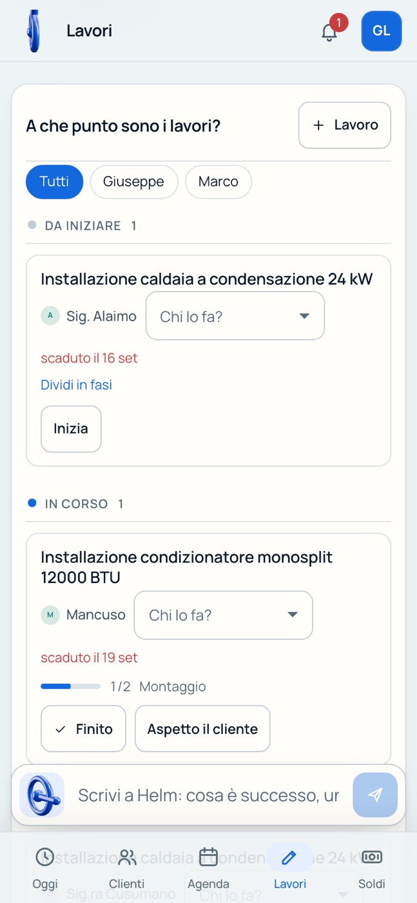
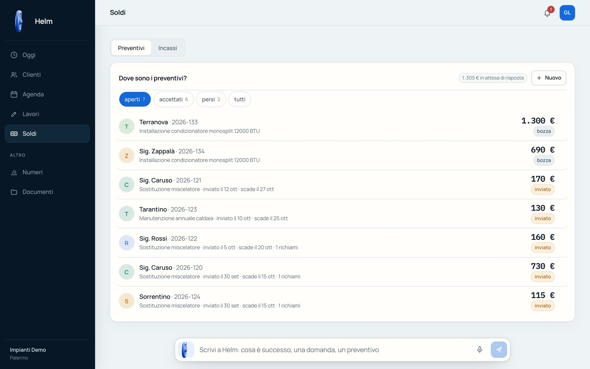

Gestionale su misura, costruito sul tuo modo di lavorare.
Clienti, appuntamenti, lavori, preventivi e soldi da incassare in un posto solo, dal computer dell'ufficio e dal telefono di chi è fuori. Lo costruisco io, a cifra fissa, sulle cose che fai davvero ogni giorno.
Rispondo io, entro un giorno lavorativo.

Helm, il gestionale che ho costruito · dati di prova
Dove si perde il lavoro.
Quasi mai per mancanza di clienti. Si perde nei passaggi: tra l'ufficio e il furgone, tra un foglio e una chat, tra oggi e la settimana prossima.
Il preventivo che nessuno ha richiamato
L'hai mandato giovedì. Il cliente non ha risposto e in ufficio nessuno se lo ricorda. Dopo due settimane ha scelto un altro, che l'aveva richiamato.
L'appuntamento scritto sul quaderno
L'ufficio lo segna, il tecnico in giro non lo vede. Lo scopri quando il cliente telefona per chiedere a che ora arrivate.
La fattura nella foto
La fattura del fornitore sta in una foto sul telefono di qualcuno. Ti accorgi della scadenza quando arriva il sollecito.
Il lavoro finito e mai incassato
Il lavoro è chiuso da un mese, la fattura non è partita e nessuno se n'è accorto. I soldi ci sono, solo che sono fermi.
Sette posti diversi per le stesse cose.
Ogni cosa sta da qualche parte. Il guaio è che nessuno sa dove, tranne chi l'ha scritta.
- Quaderno dell'ufficio · giovedì, caldaia Rossi
- Foglio Excel · preventivi 2026
- Chat WhatsApp · 23 non lette
- Foto sul telefono · fattura del fornitore
- Calendario del telefono · sopralluogo alle 9
- Post-it sul cruscotto · richiamare Ferrara
- Email · “avete visto il preventivo?”
Uno solo, che ti dice cosa fare.
Cosa ci metto dentro.
Si parte dalle due o tre cose che ti fanno perdere più tempo. Sotto ogni riga c'è scritto dove gira già oggi, così sai che non è una promessa.
Un posto solo per tutto
Clienti, appuntamenti, lavori, preventivi, documenti e incassi. Si cerca un nome e si trova la sua storia intera.
Gira in Helm
La mattina, cosa c'è da fare
Le urgenze in cima, chi aspetta una risposta, i soldi fermi da incassare. Il titolare apre e sa da dove cominciare.
Gira in Helm
Preventivi scritti a parole
Dici cosa c'è da fare e il preventivo si scrive, in PDF e con una pagina per il cliente. Sai quando lo apre e, se tace, parte il richiamo.
Gira in Helm
Lavori divisi in fasi
Ogni fase con chi la fa e per quando. A lavoro finito il cliente firma il rapportino col dito sul telefono e il PDF gli arriva da solo.
Gira in Helm
Ognuno vede il suo
Il titolare vede tutto, l'ufficio quasi tutto, il tecnico solo i suoi appuntamenti e i suoi lavori. Più aziende possono stare nello stesso sistema, coi dati separati.
Gira in Helm
Documenti letti da soli
La foto di una fattura diventa una scheda con chi l'ha mandata, quanto e quando scade. Tu controlli e confermi.
Gira in Helm
I clienti che hai già, dentro in un minuto
La rubrica del telefono, un foglio Excel salvato come CSV, l'elenco dei clienti del programma delle fatture.
Gira in Helm
Richieste dal sito dritte nel pannello
Chi chiede dal sito finisce nel pannello, e le email di risposta partono da sole a ogni passo.
Sistema prenotazioni di una casa vacanze, in produzione
- Prodotto mio
- Online da settembre 2026
Helm, il gestionale che uso io.
Un pannello e un numero WhatsApp per le aziende che lavorano sul campo: impiantisti, manutentori, tecnici. Tiene clienti, agenda, lavori, preventivi e incassi, e la mattina dice al titolare da dove cominciare.
Lo uso ogni giorno anche per il mio lavoro. Le schermate che vedi sono di un'azienda di prova, Impianti Demo: i dati dei clienti veri non si mostrano.
Chiedimi una demo dal vivo
Helm · Impianti Demo, dati di prova
Quello che non fa.
Te lo dico prima, così non lo scopri dopo aver pagato.
Non fa le fatture elettroniche
Quelle restano nel programma che usi già. Il gestionale tiene il conto di cosa è da incassare e ti ricorda chi non ha pagato.
Non è pronto domani
Si costruisce sulle tue cose: prima ci parliamo, poi parto. Per non aspettare tutto, si comincia dai due o tre pezzi che ti costano di più.
Vede solo quello che ci entra
Se l'appuntamento resta sul quaderno, il gestionale non lo sa. Per questo segnare una cosa deve costare due tocchi dal telefono, non cinque minuti.
Prima ne parliamo. Poi lo costruisco.
01
Mi racconti la giornata
Cosa fate, chi lo fa, dove si perde il tempo. In una videochiamata o in due righe per scritto.
02
Cifra fissa, prima di partire
Ti scrivo cosa costruisco, in quanto tempo e quanto costa. Quella cifra non cambia strada facendo.
03
Consegno e resto
Lo provi coi tuoi dati veri, importo i clienti che hai già. Dopo la consegna ci sono ancora io.
Le domande di tutti.
Quanto costa un gestionale su misura?
Una cifra fissa, detta prima di partire, dopo aver capito cosa ti serve. Dipende da quante cose deve fare, quindi non te la do a occhio su una pagina: ti scrivo cosa costruisco, in quanto tempo e quanto costa, e quella cifra non cambia strada facendo.
Meglio un gestionale su misura o uno già pronto?
Se un programma pronto fa già quello che ti serve, usa quello: costa meno e te lo dico io per primo. Il su misura conviene quando passi il tempo ad adattarti al programma, o quando le cose stanno in cinque strumenti che non si parlano.
Si usa anche dal telefono?
Sì. Si apre dal browser, sul computer dell'ufficio e sul telefono di chi è fuori, e si può aggiungere alla schermata del telefono come un'app. Niente da installare sui computer.
Posso portarci dentro i clienti che ho già?
Sì. La rubrica del telefono, un foglio Excel salvato come CSV o l'elenco dei clienti esportato dal programma delle fatture. In Helm l'importazione legge anche l'elenco delle chat WhatsApp.
I miei dati sono al sicuro?
Stanno in un database PostgreSQL con i permessi riga per riga: ogni persona vede solo quello che le spetta, il tecnico solo i suoi lavori. Nessuna password è scritta nel codice e le parti che contano hanno prove automatiche.
Quanto ci vuole a costruirlo?
Dipende da cosa deve fare, e te lo dico insieme alla cifra, prima di partire. Si comincia dalle due o tre cose che ti fanno perdere più tempo, così le usi presto, e il resto si aggiunge dopo.
Cosa succede dopo la consegna?
Ci sono ancora io. Se qualcosa non va rispondo io e lo sistemo io, perché il codice l'ho scritto io. Le funzioni nuove si concordano a parte, sempre a cifra fissa.
Raccontami la tua giornata.
Cosa fate, dove si perde il tempo, per quando ti serve. In due righe. Ti rispondo con un primo parere entro un giorno lavorativo.